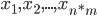
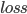
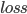

PixelDream
James Reed and Kevin Malhotra
ECE 4554/5554 Fall 2016
The goal of this project was to gain understanding of PixelRNN’s image modeling capabilities. We train the PixelRNN on the CIFAR10 dataset and subsequently ask the network to optimize a given new image to fit into the learned distribution.
Deep Learning has—in recent years—propelled the field of Computer Vision at a breakneck pace. However, a major disadvantage of these Neural Network models is that their inner workings are by and large opaque to Human inspection. Work by Google has provided insight into the workings of Convolutional Neural Network classifiers by using backpropagation to optimize the input signal—-rather than the weights—-to maximize the activation of a selected layer or neuron. The resulting input signals provide some visual intuition about what the network is doing. Recent work by DeepMind proposes the use of Recurrent Neural Networks for modeling the distribution of natural images. This is done by modeling the image as a discrete signal , where is a pixel value and is the dimensionality of the image. The model estimates the conditional probability for a discrete pixel value using an RNN model. We propose the application of the DeepDream methodology to the PixelRNN network architecture. Given an input image, we wish to adjust the image’s pixel values such that it falls within the distribution learned by the PixelRNN network.
Generative image models take advantage of the fact that—although an image may be a very high-dimensional signal—the actual content of (natural) images resides on a lower-dimensional manifold. By training a neural network as a generative model, we obtain a model of the distribution of natural images. Given this model, we can perform various tasks such as sampling and imputation of missing data. Our goal is that given a trained generative model of images, we wish to present the model with an arbitrary image and have the model optimize the image such that it fits within the learned distribution.
To attain this goal, we used the recently-described PixelRNN architecture. This architecture represents the image as a sequence of pixels and thus models the conditional probability for each pixel value . Given a corpus of natural images—in our case the CIFAR10 dataset—we trained an existing Tensorflow implementation of the PixelRNN architecture on this dataset. The network is trained as an autoencoder such that the optimization objective is to match the input grayscale pixel values with the output probability map. Once the network is trained, we can iteratively sample from the learned distribution by sampling from each conditional pixel value probability until we’ve constructed a full image.
Because Tensorflow is a flexible graph-based computation environment, we can easily reconfigure the network and apply pre-trained portions of the model to new tasks. In our case, we turned the optimization problem around. Given a pre-trained model, we have the network find via gradient descent. What is unique about our approach is that we provide the network with an initial input image from which we apply gradient descent. That is:
}
where  is the loss between the input to the PixelRNN and the output probability map. In this way, we apply pixel value updates to the image until it fits within the learned distribution.
is the loss between the input to the PixelRNN and the output probability map. In this way, we apply pixel value updates to the image until it fits within the learned distribution.
Images were input from CIFAR-10 test set into the PixelRNN to generate the modified input image to represent the model’s distribution. The evaluation metrics were purely looking at the residuals between the input and the modified input image and viewing the modified regions that changed. The images were optimized until convergence of the loss function.
Qualitative results show a marked change in image regions that might be considered “background”. Intuitively, the CIFAR-10 dataset consists of images that represent a single subject and an irrelevant background. It appears that the model has learned this as part of the distribution of this training set, and the adjustments required to transform an input image to a conforming output image entails emphasizing the foreground subject while eliding background regions.
The results have shown a priority placed on foreground images over the background images. The input dataset on CIFAR-10 has this distribution, therefore the PixelRNN has learned to model optimizing the foreground image over the background. One of the issues with our model was that we used Cross Entropy which led to optimizing the output space matching the input space with some entropy. However, this entropy not necessarily warranted and switching to optimizing the KL divergence will be sufficient. A different method of approaching this generative process would be to look further into Probabilistic Graphical Models. Appropriately perturbing the input signal to match the distribution of the generative model may yield meaningful results.
References:
https://arxiv.org/pdf/1601.06759v3.pdf
https://research.googleblog.com/2015/06/inceptionism-going-deeper-into-neural.html